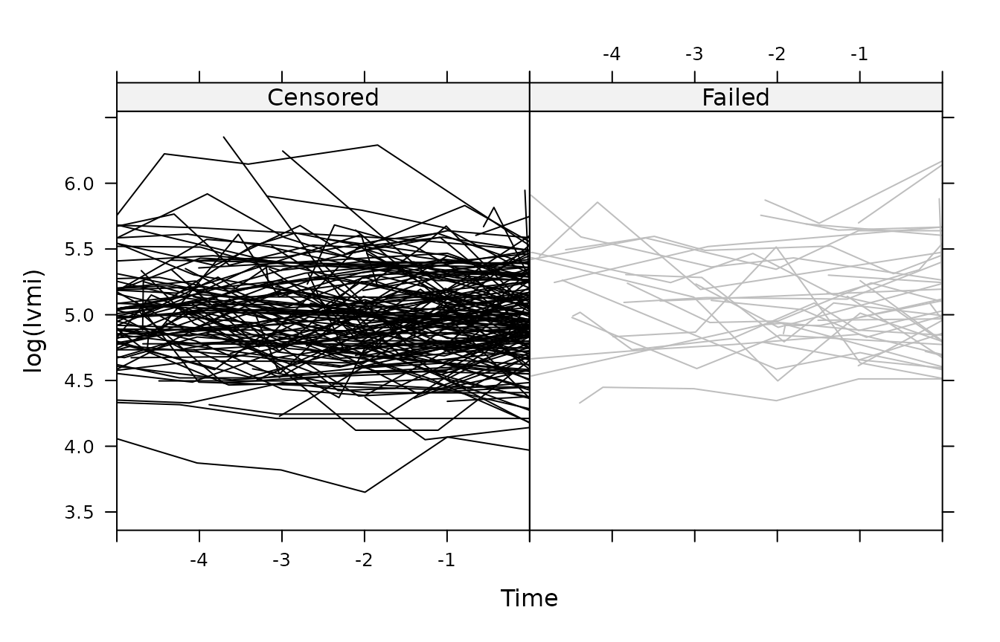

joineR
Pete Philipson, Ines Sousa, Graeme L. Hickey (edited), Peter J. Diggle
2026-06-28
Source:vignettes/joineR.Rmd
joineR.RmdDescription
The joineR package implements methods for analyzing data
from longitudinal studies in which the response from each subject
consists of a time-sequence of repeated measurements and a possibly
censored time-to-event outcome. The modelling framework for the repeated
measurements is the linear model with random effects and/or correlated
error structure. The model for the time-to-event outcome is a Cox
proportional hazards model with log-Gaussian frailty. Stochastic
dependence is captured by allowing the Gaussian random effects of the
linear model to be correlated with the frailty term of the Cox
proportional hazards model.
Unbalanced and balanced data formats
A typical protocol for a repeated measurement study specifies a set of information to be recorded on each subject immediately before or after randomization, and one or more outcome measures recorded at each of a set of pre-specified follow-up times. With a slight abuse of terminology, we refer to the initial information as a set of baseline covariates. These can include any subject-specific time-constant information, for example measured or categorical characteristics of a subject, or their treatment allocation in a randomised trial.
A natural way to store the information on baseline covariates is as an by array or data-frame, in which is the number of subjects, the number of baseline covariates, and an additional column contains a unique subject identifier. It is then natural to store the follow-up measurements of each outcome variable as an by data-frame where is the number of follow-up times and the additional column contains the subject-identifier with which we can link outcomes to baseline covariates. For completeness, we note that the follow-up times will often be unequally spaced, and should be stored as a vector of length to avoid any ambiguity. This defines a balanced data-format, the term referring to the common set of information intended to be obtained from each subject.
In observational studies, and in designed studies with non-hospitalized human subjects, it is difficult or impossible to insist on a common set of follow-up times. In such cases, the usual way to store the data is as an array or data-frame with a separate row for each follow-up measurement and associated follow-up time on each subject, together with the subject identifier and any other covariate information, repeated redundantly over multiple follow-up times on the same subject. This defines the unbalanced data-format, so-called because it allows the number and timing of follow-up measurements to vary arbitrarily between patients.
In practice, the unbalanced data-format is also widely used
to store data from a balanced study-design, despite its
in-built redundancy. Conversely, the balanced format can be used to
store data from an unbalanced design, by defining the time-vector to be
the complete set of distinct follow-up times and using NA’s
to denote missing follow-up measurements. In practice, unless the
data-set derives from a balanced design with no missing values, the
choice between the two formats reflects a compromise between storing
redundant information in the unbalanced format and generating a possibly
large number of NA’s in the balanced format.
Motivating Examples
The package includes four data-sets: heart.valve,
liver, mental, and epileptic.
Descriptions of each follow.
The heart.valve data-set
This data-set is derived from a study of heart function after surgery to implant a new heart valve, and is loaded (after installing the package) with the command:
The data refer to 256 patients and are stored in the
unbalanced format, which is convenient here because measurement
times were unique to each subject. The data are stored as a single
R object, heart.valve, which is a data-frame
of dimension 988 by 25. The average number of repeated measurements per
subject is therefore . As with any unbalanced data-set, values of
time-constant variables are repeated over all rows that refer to the
same subject. The dimensionality of the dataset can be confirmed by a
call to the dim() function, whilst the names of the 25
variables can be listed by a call to the names()
function:
dim(heart.valve)## [1] 988 25
names(heart.valve)## [1] "num" "sex" "age" "time" "fuyrs"
## [6] "status" "grad" "log.grad" "lvmi" "log.lvmi"
## [11] "ef" "bsa" "lvh" "prenyha" "redo"
## [16] "size" "con.cabg" "creat" "dm" "acei"
## [21] "lv" "emergenc" "hc" "sten.reg.mix" "hs"To extract the subject-specific values of one or more baseline
covariates from a data-set in the unbalanced format, we use the function
UniqueVariables. The three arguments to this function are:
the name of the data-frame; a vector of column names or numbers of the
data-frame that identify the required baseline covariates; the column
name or number of the data-frame that identifies the subject. For
example, to select the baseline covariates emergenc,
age and sex from the data-frame
heart.valve and assign these to a new R
object, we use the command:
heart.valve.cov <- UniqueVariables(
heart.valve,
c("emergenc", "age", "sex"),
id.col = "num")The resulting data-frame heart.valve.cov has four
columns, corresponding to the subject identifier and the three extracted
baseline covariates; hence for example:
heart.valve.cov[11:15, ]## num age emergenc sex
## 11 11 70.56712 0 0
## 12 12 50.97534 0 0
## 13 13 69.94247 0 1
## 14 14 72.30685 0 0
## 15 15 42.40000 1 0To extract all of the baseline covariates, it is easier to identify the required columns by number, hence:
heart.valve.cov <- UniqueVariables(
heart.valve,
c(2, 3, 5, 6, 12:25),
id.col = "num")
dim(heart.valve.cov)## [1] 256 19Notice that the dimension of heart.valve.cov is 256 (the
number of subjects) by 19 (one more than the number of covariates). An
analysis of these data is reported in Lim et al. (2008).
The liver data
This data-set is taken from Andersen et al. (1993). It concerns the measurement of liver function in cirrhosis patients treated either with standard or novel therapy.
The data-set is included with the package as a single R
object, which can be accessed as follows:
## [1] 2969 6
names(liver)## [1] "id" "prothrombin" "time" "treatment" "survival"
## [6] "cens"This data-set is stored in the balanced format. It contains longitudinal follow-up information on each subject, a solitary baseline covariate representing the respective therapy arm, and time-to-event information (time and censoring indicator) for each subject.
Subsets of the data can be accessed in the usual way. For example,
liver[liver$id %in% 29:30, ]## id prothrombin time treatment survival cens
## 33 29 59 0.00000000 0 0.1013699 0
## 34 30 51 0.00000000 0 0.1068493 1
## 35 30 75 0.09863014 0 0.1068493 1shows that subject 29 provided only one measurement, at time
,
and was lost-to-follow up at time
years (cens = 0), whilst subject 30 provided two
measurements, at times
and
years, and died at time
years (cens = 1).
The mental data-set
This data-set relates to a study in which 150 patients suffering from chronic mental illness were randomised amongst three different drug treatments: placebo and two active drugs. A questionnaire instrument was used to assess each patient’s mental state at weeks 0, 1, 2, 4, 6 and 8 post-randomization. The data can be loaded with the command:
data(mental)Only sixty-eight of the 150 subjects provided a complete sequence of measurements at weeks 0, 1, 2, 4, 6 and 8. The remainder left the study prematurely for a variety of reasons, some of which were thought to be related to their mental state. Hence, dropout is potentially informative. The data from the first five subjects can be accessed in the usual way:
mental[1:5, ]## id Y.t0 Y.t1 Y.t2 Y.t4 Y.t6 Y.t8 treat n.obs surv.time cens.ind
## 1 1 55 NA NA NA NA NA 2 1 0.704 0
## 2 2 44 NA NA NA NA NA 1 1 0.740 0
## 3 3 65 67 NA NA NA NA 2 2 1.121 1
## 4 4 64 56 NA NA NA NA 2 2 1.224 1
## 5 5 47 48 NA NA NA NA 2 2 1.303 0The data are stored in the balanced format, with 150 rows (one per subject) and 11 columns comprising a subject identifier, the measured values from the questionnaire at each if the six scheduled follow-up times, the treatment allocation, the number of non-missing measured values, an imputed dropout time and a censoring indicator, coded as 1 for subjects who dropped out for reasons thought to be related to their mental health state, and as 0 otherwise. Note the distinction made here between potentially informative dropout and censoring, the latter being assumed to be uninformative. Hence, the command
##
## 0 1
## 21 61shows that 21 of the 82 dropouts did so for reasons unrelated to their mental health.
The epileptic data-set
This data-set is derived from the SANAD (Standard and New Antiepileptic Drugs) study, described in Marson et al. (2007). SANAD was a randomised control trial to compare standard (CBZ) and new (LTG) anti-epileptic drugs with respect to their effects on long-term clinical outcomes. The data are stored in the unbalanced format. The data for each subject consist of repeated measurements of calibrated dose, several baseline covariates and the time to withdrawal from the drug to which they were randomised. The first three rows, all of which relate to the same subject, can be accessed as follows:
data(epileptic)
epileptic[1:3, ]## id dose time with.time with.status with.status2 with.status.uae
## 1 1 2 86 2400 0 0 0
## 2 1 2 119 2400 0 0 0
## 3 1 2 268 2400 0 0 0
## with.status.isc treat age gender learn.dis
## 1 0 CBZ 75.67 M No
## 2 0 CBZ 75.67 M No
## 3 0 CBZ 75.67 M NoConverting between balanced and unbalanced data-formats
Two functions are provided to convert objects from one format to the other. The following code demonstrates the conversion of the `mental} data-set from the balanced to the unbalanced format, including a mnemonic re-naming of the column that now contains all of the repeated measurements:
mental.unbalanced <- to.unbalanced(mental, id.col = 1,
times = c(0, 1, 2, 4, 6, 8),
Y.col = 2:7, other.col = 8:11)
names(mental.unbalanced)## [1] "id" "time" "Y.t0" "treat" "n.obs" "surv.time"
## [7] "cens.ind"
names(mental.unbalanced)[3] <- "Y"The following code converts the new object back to the balanced format:
mental.balanced <- to.balanced(mental.unbalanced, id.col = 1,
time.col = 2,
Y.col = 3, other.col = 4:7)
dim(mental.balanced)## [1] 150 11
names(mental.balanced)## [1] "id" "Y.t0" "Y.t1" "Y.t2" "Y.t4" "Y.t6"
## [7] "Y.t8" "treat" "n.obs" "surv.time" "cens.ind"Note the automatic renaming of the repeated measures according to
their measurement times, also that this function does not check whether
storing the object in the balanced format is sensible. For example,
conversion of the epileptic data to the balanced format
leads to the creation of a large array, most of whose values are
missing:
epileptic.balanced <- to.balanced(epileptic,
id.col = 1, time.col = 3,
Y.col = 2, other.col = 4:12)
dim(epileptic.balanced)## [1] 605 1006## [1] 599783Once a data-set is in the balanced format (if it is unbalanced then
to.balanced can be applied) then the mean, variance and
correlation matrix of the responses can be extracted using
summarybal. An example is given below using the mental
data-set:
summarybal(mental, Y.col = 2:7, times = c(0, 1, 2, 4, 6, 8),
na.rm = TRUE)## $mean.vect
## x y
## Y.t0 0 55.77333
## Y.t1 1 53.03378
## Y.t2 2 50.37008
## Y.t4 4 48.62963
## Y.t6 6 46.94048
## Y.t8 8 46.02941
##
## $variance
## Y.t0 Y.t1 Y.t2 Y.t4 Y.t6 Y.t8
## 132.1228 152.7403 167.5366 168.6653 228.8759 181.4917
##
## $cor.mtx
## [,1] [,2] [,3] [,4] [,5] [,6]
## [1,] 1.0000000 0.5939982 0.4537496 0.4186798 0.3432355 0.2997679
## [2,] 0.5939982 1.0000000 0.7793311 0.6805021 0.6631543 0.6149448
## [3,] 0.4537496 0.7793311 1.0000000 0.7992470 0.7077238 0.6202277
## [4,] 0.4186798 0.6805021 0.7992470 1.0000000 0.8108585 0.7402240
## [5,] 0.3432355 0.6631543 0.7077238 0.8108585 1.0000000 0.8681933
## [6,] 0.2997679 0.6149448 0.6202277 0.7402240 0.8681933 1.0000000Creating a jointdata object
A jointdata object is a list consisting of up to three
data-frames, which collectively contain repeated measurement data,
time-to-event data and baseline covariate data. The repeated measurement
data must be stored in the unbalanced format. The time-to-event and
baseline covariate data must each be stored in the balanced format,
i.e. with one line per subject. Each data-frame must include a column
containing the subject id, and all three subject id columns must match.
The UniqueVariables function provides a convenient way to
extract the time-to-event and base line covariate data from an
unbalanced data-frame, as in the following example.
liver.long <- liver[, 1:3]
liver.surv <- UniqueVariables(liver, var.col = c("survival", "cens"),
id.col = "id")
liver.baseline <- UniqueVariables(liver, var.col = 4,
id.col = "id")
liver.jd <- jointdata(longitudinal = liver.long,
survival = liver.surv,
baseline = liver.baseline,
id.col = "id",
time.col = "time")As a second example, we create a jointdata object from
the single data-frame heart.valve as follows:
heart.surv <- UniqueVariables(heart.valve, var.col = c("fuyrs", "status"),
id.col = "num")
heart.long <- heart.valve[, c(1, 4, 5, 7, 8, 9, 10, 11)]
heart.jd <- jointdata(longitudinal = heart.long,
survival = heart.surv,
id.col = "num",
time.col = "time")A summary of a jointdata object can be obtained using
the summary function. For example:
summary(heart.jd)## $subjects
## [1] "Number of subjects: 256"
##
## $longitudinal
## class
## time numeric
## fuyrs numeric
## grad numeric
## log.grad numeric
## lvmi numeric
## log.lvmi numeric
## ef integer
##
## $survival
##
## Number of subjects that fail: 54
## Number of subjects censored: 202
##
## $baseline
## [1] "No baseline covariates data available"
##
## $times
## [1] "Unbalanced longitudinal study or more than twenty observation times"A jointdata object can also be constructed from any
specified subset of subjects. For example,
take <- heart.jd$survival$num[heart.jd$survival$status == 0]
heart.jd.cens <- subset(heart.jd, take)selects only those subjects whose survival status is zero, i.e. their event-time is right-censored.
The sample function can also be used to select a random
sample of subjects from a jointdata object, for
example:
set.seed(94561)
heart.jd.sample <- sample.jointdata(heart.jd, size = 10)takes the data from a random sample of 10 out of the 150 subjects and
assigns the result to a jointdata object named
heart.jd.sample.
Plotting a jointdata object
The default operation of the generic plot function
applied to a jointdata object is a plot of longitudinal
profiles of the repeated measurements. If the object contains more than
one longitudinal variable, each is presented in a separate panel. For
example, the command plot(heart.jd) produces the following
figure:
plot(heart.jd)A useful device for the joint exploratory analysis of longitudinal
and time-to-event data is to compare longitudinal profiles amongst
sub-sets of subjects selected according to their associated
time-to-event, or specified ranges thereof, possibly in combination with
other selection criteria such as treatment allocation or other baseline
covariates. This can be done by applying the plot function
to subsets of the data. For example, the figure below shows the
longitudinal variable gradient in the heart data set as a
pair of plots, with the two sub-sets of subjects chosen according to
whether their time-to-event outcome was or was not censored. The figure
is generated by the commands:
par(mfrow = c(1, 2))
plot(heart.jd.cens, Y.col = 4, main = "gradient: censored")
take <- heart.jd$survival$num[heart.jd$survival$status == 1]
heart.jd.uncens <- subset(heart.jd, take)
plot(heart.jd.uncens, Y.col = 4, main = "gradient: failed")Plots can be modified in the usual way by specifying graphical
parameters through the par function, or by adding
points and/or lines to an existing plot.
Another useful exploratory device is a plot that considers the longitudinal trajectory of each subject prior to departure from the study, for whatever reason, with the time-scale for each subject shifted so that their last observed longitudinal measurement is taken as time zero. This can help to reveal patterns of longitudinal measurements, e.g. an atypically increasing or decreasing trajectories, that may be related to drop-out.
The function jointplot produces a plot of this kind. As
an example, we consider the heart dataset, using the log of the left
ventricular mass index as the longitudinal variable of interest. The
column containing the censoring indicator in the survival component of
the jointdata object must be specified. The default for the
jointplot function is to split the profiles according to
the censoring indicator.
jointplot(heart.jd,
Y.col = "log.lvmi", Cens.col = "status",
lag = 5,
col1 = "black", col2 = "gray", ylab = "log(lvmi)")
Further arguments can be used to label and colour the plot to suit the user, as well as options to add a (smoothed) mean profile.
Exploring covariance structure
An important component of any joint model is the covariance structure
of the longitudinal measurements. For balanced longitudinal data, the
simplest way to explore the covariance structure is to fit a provisional
model for the mean response profiles by ordinary least squares and apply
the var function to the matrix of residuals. Note, however,
that any mis-specification of the assumed model for the mean response
profiles will lead to biased estimates of the residual covariance
structure, hence at this stage over-fitting is preferable to
under-fitting. For example, in a randomised trial of two or more
treatments with a common set of follow-up times for all subjects, we
would recommend fitting a saturated treatments-by-times model for the
mean response profiles, as in the following example.
y <- as.matrix(mental[, 2:7])
# converts mental from list format to numeric matrix format
means <- matrix(0, 3, 6)
for (trt in 1:3) {
ysub <- y[mental$treat == trt, ]
means[trt,] <- apply(ysub, 2, mean, na.rm = TRUE)
}
residuals <- matrix(0, 150, 6)
for (i in 1:150) {
residuals[i,] <- y[i,] - means[mental$treat[i], ]
}
V <- cov(residuals, use = "pairwise")
R <- cor(residuals, use = "pairwise")
round(cbind(diag(V), R), 3)## [,1] [,2] [,3] [,4] [,5] [,6] [,7]
## [1,] 131.774 1.000 0.612 0.472 0.464 0.391 0.321
## [2,] 142.171 0.612 1.000 0.766 0.663 0.650 0.603
## [3,] 159.711 0.472 0.766 1.000 0.792 0.712 0.624
## [4,] 153.364 0.464 0.663 0.792 1.000 0.799 0.738
## [5,] 198.350 0.391 0.650 0.712 0.799 1.000 0.861
## [6,] 167.886 0.321 0.603 0.624 0.738 0.861 1.000Note that the variances show no strong relationship with time, and that the correlations decrease with increasing distance from the diagonal.
For unbalanced longitudinal data, direct calculation of a covariance matrix is unwieldy at best, and impossible if follow-up times are completely irregular. In these circumstances, an alternative exploratory device is the variogram. This makes use of the theoretical result that for any two random variables, and say, with common expectation,
$${\rm E}\left[\frac{1}{2}(A-B)^2\right] = {\rm Var}(A)+{\rm Var}(B) - 2 {\rm Cov}(A,B).$$
In the present context, let denote the residual associated with the th measurement on the th subject, and the corresponding measurement time. If we are willing to assume that the have a common variance and that the correlation between any two residuals on the same subject depends only on the time-separation between them, so that ${\rm Corr}(R_{ij},R_{ik}) = \rho(u_{ijk})$, where , it follows that
$${\rm E}\left[\frac{1}{2}(R_{ij} - R_{ik})^2\right] = \sigma^2\{1 - \rho(u_{ijk})\}.$$
A scatterplot of the
against
is called a variogram
cloud, whilst a smoothed version, obtained by averaging the
within pre-specified intervals of
,
is called the sample variogram. The function
variogram calculates the variogram cloud. This function has
an associated method for the plot function that can display
the variogram cloud, the sample variogram or both, as required.
vgm <- variogram(indv = mental.unbalanced[, 1],
time = mental.unbalanced[, 2],
Y = mental.unbalanced[, 3])
vgm$sigma2## [1] 176.3937The figure below shows the result of the following three calls to the
plot function. Note that whilst the default for plotting a
variogram object is to show both the cloud and the sample variogram, the
sample variogram is almost always the more useful as a pointer to the
underlying correlation structure of the data.
Model-fitting
The package includes functions for fitting two different classes of model using maximum likelihood estimation. The first is an extended version of the random effects model proposed by Wulfsohn and Tsiatis (1997). See Henderson et al. (2000). The second is the transformation model described by Diggle et al. (2008).
The random effects model
In the extended Wulfsohn and Tsiatis model, both the subject-specific mean response for the repeated measurements and the subject-specific hazard for the time-to-event outcome depend on latent random effect vectors. Hence, if denotes the hazard for subject and the -th repeated measurement on subject , the model specifies latent vectors and to follow zero-mean multivariate normal distributions, realized independently for different subjects. Conditional on and , the repeated measurements sub-model is
and the hazard sub-model is
In the above, the , , and are vectors of explanatory variables that may be time-constant or time-varying, and the are mutually independent, $Z_{ij} \sim {\rm N}(0, \tau^2)$. In principle, this is a very flexible model. In practice, the computational cost of evaluating the likelihood restricts routine implementation of the model to low-dimensional and . Wulfsohn and Tsiatis (1997) considered the special case in which the repeated measurements follow the so-called random intercept and slope model with , whilst the random effects for the repeated measurement and time-to-event sub-models are proportional, hence .
The function provided in the joineR package for fitting
Wulfsohn-Tsiatis models is joint, which allows the user to
choose from three models for the joint random effects: random intercept;
random intercept and slope; quadratic random effects.
The first argument to joint is a jointdata
object that provides the data to be analysed. The following two
arguments specify the longitudinal and survival sub-models, making use
of the regular R formula syntax, including incorporating a
Surv object as the response in the survival sub-model for
compatibility with the R function coxph from
the survival package. The next argument
model() allows the user to choose one of the three
candidate random effects models, and defaults to the random intercept
and slope case. Setting model = "int" and
model = "quad" will fit a random intercept only and random
quadratic joint model respectively.
The functions to fit a joint random effects model have options to fit the repeated measurement sub-model and the hazard sub-model separately.
The syntax for joint is best seen via examples. We will
fit the joint random effect model to the mental data-set
with the sub-models:
To do this, we first create a jointdata object for these
data, using the unbalanced form of the data defined earlier.
mental.long <- mental.unbalanced[, 1:3]
mental.surv <- UniqueVariables(mental.unbalanced,
6:7, id.col = 1)
mental.baseline <- UniqueVariables(mental.unbalanced,
4, id.col = 1)
mental.jd <- jointdata(mental.long,
mental.surv,
mental.baseline,
id.col = "id",
time.col = "time")The following command then fits the model. Note that in the function
call, the Y ~ 1 and
Surv(surv.time, cens.ind) ~ treat refer to the
names of columns in the relevant data-frames.
model.jointrandom <- joint(mental.jd, Y ~ 1 + time + treat,
Surv(surv.time, cens.ind) ~ treat,
model = "int")
names(model.jointrandom)## [1] "coefficients" "sigma.z" "sigma.u" "hazard" "loglik"
## [6] "numIter" "convergence" "model" "sepassoc" "sepests"
## [11] "compRisk" "sep.loglik" "formulae" "data" "call"There is a summary method for a model fitted using
joint. This produces a summarized version of the model fit,
omitting some of the information contained within the fitted object
itself.
summary(model.jointrandom)##
## Call:
## joint(data = mental.jd, long.formula = Y ~ 1 + time + treat,
## surv.formula = Surv(surv.time, cens.ind) ~ treat, model = "int")
##
## Random effects joint model
## Data: mental.jd
## Log-likelihood: -2883.039
##
## Longitudinal sub-model fixed effects: Y ~ 1 + time + treat
## (Intercept) 61.8734368
## time -0.5941484
## treat -3.8583060
##
## Survival sub-model fixed effects: Surv(surv.time, cens.ind) ~ treat
## treat -0.6153641
##
## Latent association:
## gamma_0 0.08897565
##
## Variance components:
## U_0 Residual
## 99.95576 64.36332
##
## Convergence at iteration: 32
##
## Number of observations: 900
## Number of groups: 150Supplying the additional argument variance = FALSE to
the summary() command results in the standard deviations
rather than variances being displayed for the random effect(s) and
measurement error terms.
The function jointSE gives standard errors and
confidence intervals for the parameters that define the mean response
profiles in a random effects joint model. The calculation of standard
errors for the random effect parameters is not yet implemented.
Approximate standard errors can be obtained by a parametric bootstrap,
i.e. by re-estimating the model parameters from simulated realizations
of the fitted model.
The first two arguments to jointSE are the result of a
call to joint, in which the associated
jointdata object is automatically stored as part of the
fit, and an option to specify the number of bootstrap samples taken. The
remaining arguments are included for completeness and mirror the last
four arguments of joint itself as well as a further option
to control the level of output printed to the R terminal.
With a realistically large number of bootstrap samples, this function
can be slow! The output given is for 100 bootstrap samples, the
confidence limits default to zero unless at least 100 bootstrap samples
are taken.
model.jointrandom.se <- jointSE(model.jointrandom, n.boot = 100)
model.jointrandom.se## Component Parameter Estimate SE 95%Lower 95%Upper
## 1 Longitudinal (Intercept) 61.8734 2.2274 57.4448 66.4313
## 2 time -0.5941 0.1785 -0.8670 -0.2703
## 3 treat -3.8583 1.0341 -6.0267 -1.8685
## 4 Failure treat -0.6154 0.1907 -0.9307 -0.2603
## 5 Association gamma_0 0.0890 0.0165 0.0646 0.1229
## 6 Variance U_0 99.9558 12.3516 72.9545 122.6506
## 7 Residual 64.3633 7.5163 50.8545 80.0720As mentioned previously, the argument model in the
function joint can be altered to fit a joint random effects
model with a random intercept and slope, i.e. the Wulfsohn-Tsiatis
model, or a random quadratic for the repeated measurements sub-model.
Choosing the former leads to the following specification for the
sub-models:
Similarly, setting `model = “quad”} leads to a joint random effects model of the form:
The argument sepassoc can be set to TRUE
for each of these model choices, allowing a different latent association
parameter for each random effect in the survival sub-model, e.g. for the
random intercept and slope model
The default in joineR is that
sepassoc = FALSE, in which case a model with proportional
association is used.
We now consider an example with separate association using the
liver data will now be considered. We first fit the
Wulfsohn-Tsiatis model to the liver data. The sub-models
considered are those used in Henderson et al. (2002) to analyse these
data.
model.jointrandom.liver <- joint(
liver.jd,
prothrombin ~ treatment * time + I(time == 0) * treatment,
Surv(survival, cens) ~ treatment,
max.it = 1000)A similar model, but allowing separate association, can be fitted by
including within the function call the argument
sepassoc = TRUE.
model.jointrandom.liver.sep <- joint(
liver.jd,
prothrombin ~ treatment * time + I(time == 0) * treatment,
Surv(survival, cens) ~ treatment,
sepassoc = TRUE)The likelihoods for these models can now be compared using
model.jointrandom.liver.sep$loglik$jointlhood - model.jointrandom.liver$loglik$jointlhoodAllowing separate association increases the log-likelihood by 3.36 on
one degree of freedom. The parameter estimates for each of these models
can be accessed via the summary command as shown
previously.
Our final example uses a subset of the original
heart.valve data set that considers only the response
variable grad (gradient). The number of subjects in this
data set is reduced, because some patients only provided measurements on
lvmi (left ventricular mass index) and ef
(ejection fraction).
heart.grad <- heart.valve[!is.na(heart.valve$grad), ]
heart.grad.long <- heart.grad[, c(1, 4, 7)]
heart.grad.surv <- UniqueVariables(heart.grad,
var.col = c("fuyrs", "status"),
id.col = "num")
heart.grad.base <- UniqueVariables(heart.grad,
var.col = 2:3,
id.col = "num")
heart.grad.jd <- jointdata(longitudinal = heart.grad.long,
survival = heart.grad.surv,
baseline = heart.grad.base,
id.col = "num",
time.col = "time")We then use the function joint with argument
model = "int" to fit a random intercept model to these data
and summaries the result.
model.jointrandom.heart <- joint(heart.grad.jd,
grad ~ age + sex,
Surv(fuyrs, status) ~ age + sex,
model = "int")
summary(model.jointrandom.heart)##
## Call:
## joint(data = heart.grad.jd, long.formula = grad ~ age + sex,
## surv.formula = Surv(fuyrs, status) ~ age + sex, model = "int")
##
## Random effects joint model
## Data: heart.grad.jd
## Log-likelihood: -2930.46
##
## Longitudinal sub-model fixed effects: grad ~ age + sex
## (Intercept) 19.91968226
## age -0.03826846
## sex 3.58176818
##
## Survival sub-model fixed effects: Surv(fuyrs, status) ~ age + sex
## age 0.1051874
## sex 0.1092631
##
## Latent association:
## gamma_0 0.08677043
##
## Variance components:
## U_0 Residual
## 42.05409 263.31642
##
## Convergence at iteration: 29
##
## Number of observations: 629
## Number of groups: 221Acknowledgements
The joineR package was funded by the UK Medical Research
Council (MRC) under a grant with Principal Investigator (PI) Prof. Paula
Williamson; Co-Investigators (Co-Is) Prof. Peter J. Diggle and
Prof. Robin Henderson; and Research Associates Dr Ruwanthi
Kolamunnage-Dona, Dr Peter Philipson, and Dr Ines Sousa (Grant numbers
G0400615). Updates to it were made under a separate MRC grant with PI Dr
Ruwanthi Kolamunnage-Dona, Co-Is Dr Peter Philipson and Dr Andrea
Jorgensen, and Research Associate Dr Graeme L. Hickey (Grant number
MR/M013227/1).
References
Andersen PK, Borgan O, Gill RD, Kieding N. Statistical Models Based on Counting Processes, 1993; New York: Springer.
Diggle PJ, Sousa I, Chetwynd AG. Joint modelling of repeated measurements and time-to-event outcomes: the fourth Armitage lecture. Statistics in Medicine, 2008; 27: 2981-2998.
Marson AG, Al-Kharusi AM, Alwaidh M, Appleton R, Baker GA, Chadwick GW, et al. The SANAD study of effectiveness of carbamazepine, gabapentin, lamotrigine, oxcarbazepine, or topiromate for treatment of partial epilepsy: an unblinded randomised controlled trial. Lancet, 2007; 369: 1000-1015.
Henderson R, Diggle PJ, Dobson A. Joint modelling of longitudinal measurements and event time data. Biostatistics, 2000; 1: 465-480
Henderson R, Diggle PJ, Dobson A. Identification and efficacy of longitudinal markers for survival. Biostatistics, 2002; 3: 33-50.
Lim E, Ali A, Theodorou P, Sousa I, Ashrafian H, Chamageorgakis AD, et al. A longitudinal study of the profile and predictors of left ventricular mass regression after stentless aortic valve replacement. Annals of Thoracic Surgery, 2008; 85: 2026-2029.
Wulfsohn MS, Tsiatis AA. A joint model for survival and longitudinal data measured with error. Biometrics, 1997; 53: 330-339.